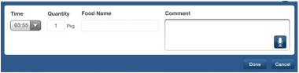

The ISS FIT app also allows users to manually enter food items. To manually enter a food item, click on the pencil icon (with a magnifying glass sign) from the Summary page:
Next, fill out the input fields with time, quanity of food, food name, and any optional comments if you'd like.

Click the "Done" button and your food entry will be saved.
NOTE: This current version of the ISS FIT application requires manual entries to be sent to the Earth lab before their nutrition content will be displayed inside the application.